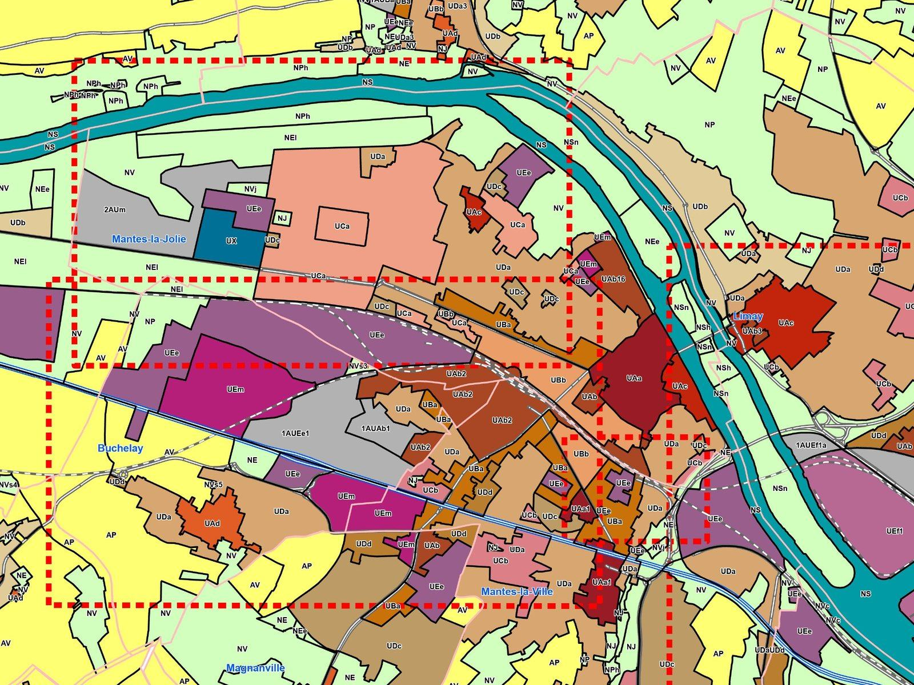
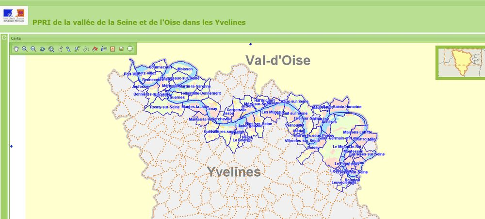
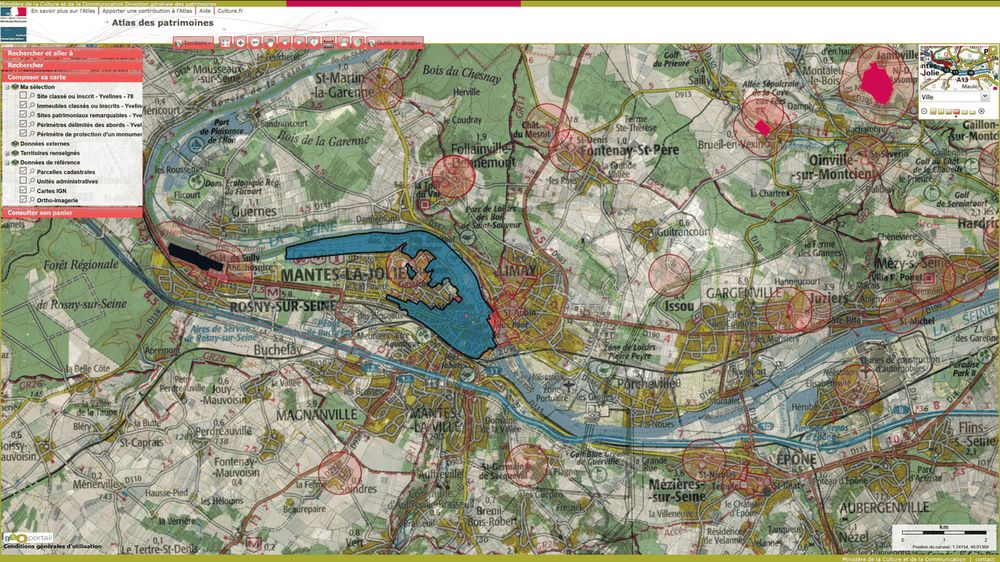

Le certificat d'urbanisme
C'est le document qui répond à la question « qu'est-ce que je peux faire ici ? ». Il se demande avant tout le reste, et il vaut la peine.
Il existe sous deux formes. Le certificat d'information indique les règles applicables au terrain : zonage, servitudes d'utilité publique, taxes et participations, droit de préemption. Le certificat opérationnel va plus loin : il dit si le terrain peut recevoir le projet décrit, et l'état des équipements publics qui le desservent.
Son intérêt décisif est la stabilisation des règles : les dispositions d'urbanisme, le régime des taxes et les limitations administratives au droit de propriété existant à sa date ne peuvent plus être remis en cause pendant sa durée de validité, sauf exceptions liées à la sécurité et à la salubrité.
Autrement dit : il protège votre projet d'un changement de règlement qui interviendrait entre-temps.
Où se lisent les règles



Quelle autorisation pour quel projet
Plusieurs régimes, du plus léger au plus lourd. Le bon choix se fait sur le projet, pas sur son ampleur apparente.
- Aucune formalitéLes travaux les plus modestes, en dehors des secteurs protégés. La dispense n'est jamais générale : elle dépend de seuils et de la localisation.
- La déclaration préalablePetites extensions, abris, piscines, clôtures dans certaines communes, changements d'aspect extérieur, et les divisions de terrain à bâtir sans voie ni équipement commun. Dossier allégé, instruction plus rapide.
- Le permis de construireLes constructions nouvelles et les extensions au-delà des seuils, les changements de destination avec modification de la structure ou de la façade.
- Le permis d'aménagerLes opérations qui créent des voies, des espaces ou des équipements communs à plusieurs lots — et, jusqu'au 27 septembre 2026, tout lotissement situé en secteur protégé.
En secteur protégé, les seuils et les formalités diffèrent, et des travaux dispensés ailleurs deviennent soumis à déclaration.
Nouveau : le décret n° 2026-674 du 27 juillet 2026 s'applique aux demandes déposées à compter du 28 septembre 2026. À partir de cette date, le seul fait de se trouver en secteur protégé ne suffira plus à imposer le permis d'aménager pour un lotissement : le critère des équipements communs deviendra le seul. Jusqu'au 27 septembre 2026, la règle ancienne continue de s'appliquer. Dans les deux cas, l'avis de l'architecte des Bâtiments de France reste requis.
Le permis d'aménagerCe que nous apportons au dossier
Un dossier refusé ou déclaré incomplet, c'est plusieurs mois perdus. La plupart des rejets tiennent aux pièces graphiques et aux surfaces.
Nous fournissons le plan de situation et le plan de masse coté dans les trois dimensions, appuyés sur un levé réel du terrain et non sur un fond cadastral approximatif.
Nous établissons les surfaces — surface de plancher, emprise au sol, coefficient de pleine terre — avec leur justification, et nous vérifions les règles d'implantation : retraits par rapport aux limites, hauteurs, stationnement.
Nous contrôlons enfin la situation du terrain au regard des servitudes, des risques et des périmètres de protection — et nous vous disons ce qui va poser problème avant que la mairie ne le dise.
Les questions qu'on nous pose
Le certificat d'urbanisme est-il obligatoire ?
Non, sa demande est facultative. Mais c'est le seul document qui fige les règles applicables à votre terrain pour une durée déterminée. Sur un projet d'acquisition ou de division, la demande auprès de l'administration est gratuite et son intérêt considérable.
Puis-je déposer moi-même mon dossier ?
Oui, rien ne l'interdit — le recours à un architecte n'est pas systématique : un particulier qui construit pour lui-même en est dispensé jusqu'à 150 m² de surface de plancher. Notre intervention porte sur ce qui relève de la mesure : le levé, les limites, les surfaces et les plans cotés. C'est précisément sur ces pièces que les dossiers achoppent.
Que faire en cas de refus ?
Un refus doit être motivé. Il faut d'abord comprendre le motif : il est parfois technique et se corrige, parfois de fond et remet en cause le projet. Nous vous aidons à analyser la décision au regard du règlement applicable. Les voies de recours, elles, relèvent d'un avocat.
Mon terrain est en zone inondable. Puis-je construire ?
Cela dépend de la zone du plan de prévention des risques et de son règlement : certaines zones interdisent toute construction nouvelle, d'autres l'autorisent sous conditions, notamment de cote de plancher. Cette cote se rattache au nivellement général de la France — c'est un travail de géomètre-expert.
Un projet à instruire ?
Le cabinet intervient à Mantes-la-Jolie, à Limay et dans toute la vallée de la Seine. Indiquez-nous la commune, la référence cadastrale et le projet envisagé : nous vous dirons de quelle procédure vous relevez et quelles pièces produire.
Sources : Code de l'urbanisme — certificat d'urbanisme, articles L.410-1 et R.410-1 et suivants ; régimes d'autorisation, articles L.421-1 et suivants et R.421-1 et suivants ; surface de plancher, article R.111-22. Les seuils, délais et régimes évoluent : les éléments ci-dessus sont donnés à titre d'information générale, à la date de rédaction de cette page, et ne remplacent pas l'examen de votre dossier ni la consultation du règlement applicable à votre commune.